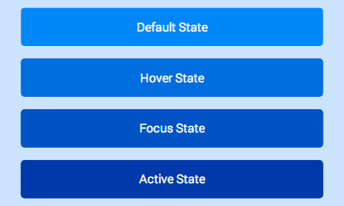

See Pseudo classes for touch states:

Hover and Focus Stickiness
On most mobile browsers hover and/or focus states will apply
to an element after it’s been tapped.
Consider carefully
what styles you set and how they will look to the user after
they finish their touch.
Bear in mind that anchor tags and buttons may have different behaviour in different browsers, so assume in some cases hover will remain and in others focus will remain.
Enabling Active State Support on iOS
Unfortunately, Safari on iOS does not apply the active state by default, to get it working you need to add a touchstart event listener to the document body or to each element.
You should do this behind a user agent test so it’s only run on iOS devices.
Adding a touch start to the body has the advantage of applying to all elements in the DOM, however this may have performance issues when scrolling the page.
window.onload = function() {
if(/iP(hone|ad)/.test(window.navigator.userAgent)) {
document.body.addEventListener('touchstart', function() {}, false);
}
};
The alternative is to add the touch start listeners to all the interactable elements in the page, alleviating some of the performance concerns.
window.onload = function() {
if(/iP(hone|ad)/.test(window.navigator.userAgent)) {
var elements = document.querySelectorAll('button');
var emptyFunction = function() {};
for(var i = 0; i < elements.length; i++) {
elements[i].addEventListener('touchstart', emptyFunction, false);
}
}
};
Override Default Browser Styles for Touch States
Once you add styles for the different states, you’ll notice that most browsers implement their own styles to respond to a user’s
touch, you should override these defaults when you’ve added your own styles.